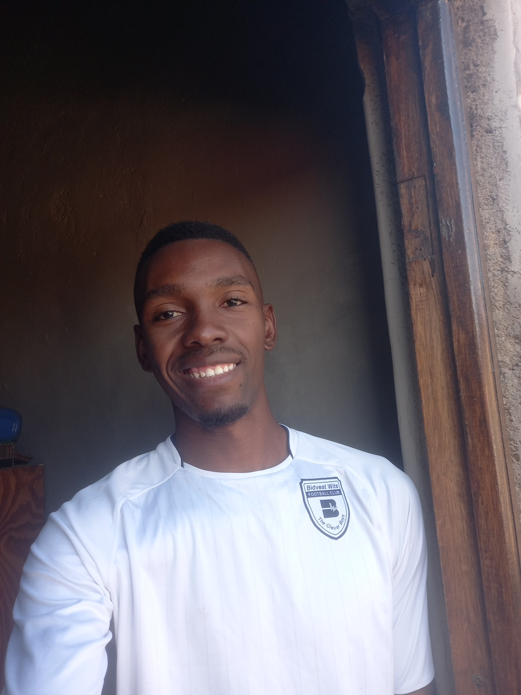

Full Stack Web Developer | Problem Solver | Communicator
Prince Sithole

I am a dedicated and passionate individual who enjoys learning and applying knowledge consistently. I thrive in environments where I can interact with people, share ideas, and grow both personally and professionally. My strengths lie in communication, motivation, and leadership through teaching and preaching. I am constantly working on balancing my pursuit of excellence with efficiency.
BSc Biological Sciences – University of the Witwatersrand
Matric Certificate – Senthibele Senior Secondary School
Currently studying Full Stack Web Development at HyperionDev.
Part-Time Tutor
Taught high school students Mathematics and Science, helping improve understanding and performance.
Name: Prince Sithole
Email: prince24.px@gmail.com
Phone: +27 66 022 5393
Location: South Africa